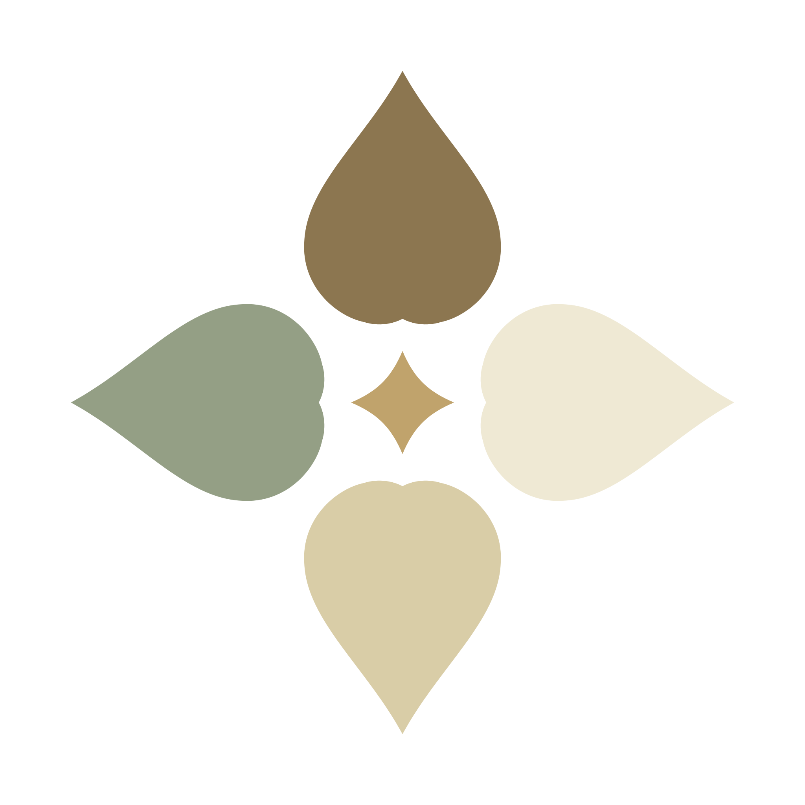

Takaran yang jelas
Setiap menu punya resep standar. Rasa favoritmu punya patokan, bukan sekadar kira-kira.

kasapink. Halo, KasapinkDARI DAPUR KASAPINK
Resep terukur, rasa yang konsisten. Kami meracik setiap menu dengan takaran yang jelas, supaya rasa favoritmu tetap terasa seperti pertama kali.
Makanan hari ini. Cerita baru segera menyusul.

01 / MAKANAN
Menu makanan Kasapink sudah bisa dipesan. Tanya menu hari ini, lalu kami bantu konfirmasi pesananmu lewat WhatsApp.
Setiap menu punya resep standar. Rasa favoritmu punya patokan, bukan sekadar kira-kira.
Pembelian bahan, produksi, dan stok dicatat untuk membantu menjaga mutu setiap pesanan.
Lihat pilihan menu dan konfirmasi pesanan langsung bersama kami.
Pesan via WhatsApp ↗02 / PARFUM SEGERA HADIR
Lini parfum Kasapink sedang kami siapkan. Penasaran dengan cerita berikutnya? Kirim pesan untuk bertanya tentang kabar rilisnya.
Tanya kabar parfum03 / CERITA KAMI
Di Kasapink, setiap menu punya resep standar dan takaran yang jelas. Pembelian bahan, produksi, dan stok dicatat rapi supaya mutu yang sampai ke kamu tetap terjaga.
Hal-hal kecil di dapur itulah yang membantu kami menyajikan rasa yang ingin kamu temui lagi.
Mari mulai percakapan